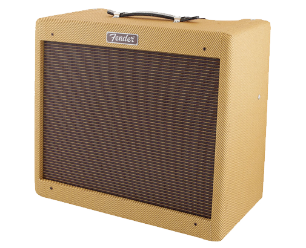
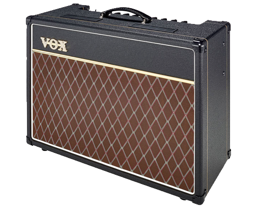
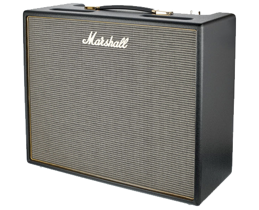
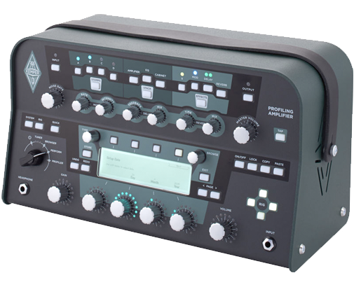
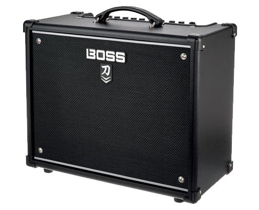

Amplificadores
1.Fender Blues junior

Fender no necesita presentación para ningún guitarrista que sepa algo de guitarras. Es una de las empresas más importantes del mercado y los muy piratas dominan las guitarras, las acústicas, los amplis y si te despistas te roba el novio.
El Blues Junior es el más accesible y el más vendido de todos los amplificadores de válvulas del mundo. Cuenta con una sección de EQ de agudos, medios y graves con interruptor “Fat” para hacer tu sonido más grande, 15W de potencia y reverb no conmutable, es decir no la puedes poner y quitar, pero tampoco es que sea muy necesario.
2.Vox AC15 C1X
| 
Si siempre has querido el sonido de los beatles o de los Queen no busques más, este amplificador es para ti. La compañía Vox es originaria de Inglaterra y cuando empezaron a construir amplis, les ponían válvulas distintas a las americanas Fender, porque es lo que tenían a disposición, sin embargo ese cambio de válvula le dio ese sonido característico que hace que todo tipo de artistas quieran tener uno de estos en su estudio.
El Vox AC15 es el hermano pequeño del AC30 y tiene 15W de potencia, como podrás imaginarte. Cuenta con una sección de EQ de agudos y graves, y tiene los efectos de reverb y tremolo no conmutables, en el caso de la reverb da igual pero estaría guay poder conmutar el tremolo. Uno de los puntos fuertes de este amplio es el canal top boost. Es un canal con más overdirve que el normal y que va perfecto si quieres un sonido mas rock.
3.Marshall Origin
| 
Llegamos al TOP3 con una joya de la corona, Marshall. Estaría como un cencerro si hiciera un top de amplis y no mencionara al rey mago Marshall. Esta compañía ha creado el sonido que hoy conocemos como rock’n roll, de los Zepellin a Metallica.
Con la serie Origin, Marshall ha introducido la rueda de “tilt” que han agradecido muchos guitarristas. Los primeros amplis de Marshall tenían dos canales, uno normal y otro llamado High Treble, y los guitarristas solían mezclar los dos con cables para conseguir un sonido similar al canto de la sirenita. Sin embargo todo eso de puentear con cables queda en el pleistoceno con la movida del tilt, ya que ahora puedes regular cuanto quieres de cada canal. También tenemos la sección de EQ de agudos, medios y graves, una rueda push/pull para decidir cuanta ganancia o distorsión queremos en el ampli y un conmutador de potencia para poder tocar a volúmenes mas bajos y no despertar a la abuela de su siesta.
4.Kemper
| 
Creo que me la juego y diré que este es uno de los amplificadores más revolucionarios que han diseñado hasta hoy. Hace pocos años se creo la tecnología IR que funciona a través de respuesta de impulsos. El tema esta que se había conseguido emular con bastante éxito la sección de preamplificación de un ampli, pero no la parte de etapa de potencia ni altavoces, ahí es donde entra la tecnología IR. La respuesta de impulsos hace una copia digital de la respuesta sonora que crea un altavoz y la recrea perfectamente.
Pues bueno, el señor Kemper dijo, esto es mi movida, voy a meterlo en un cabezal y voy a añadir todo el resto de movidas, efectos, pedales… todo.
5.Boss Katana
| 
La compañía Boss es reconocida universalmente por su línea de efectos y pedales, y hace unos años decidieron hacer el salto al mundo de la amplificación, lo que nadie esperaba es que hiciera salto de pértiga, menudos piratas. El Boss Katana es un amplificador modeling, por lo que puede hacer lo que te de la gana y tiene equipados efectos para hacer aún más lo que te de la gana. Es como la versión amplificador de guitarra del coche fantástico.
Empecemos por lo sencillo, una sección de EQ estándar con agudos, medios y graves, pero luego nos vamos a la rueda de preamplificación donde podemos elegir cinco tipos distintos, luego tenemos ruedas para efectos de modulación, boost, delay, reverb y efectos alienígenas. Todo esto puede ser salvado en canales que puedes conmutar a placer, y te aseguro que será placentero. También cuenta con un conmutador de potencia para poder tocar a 0,5 / 25 / 50 W.
|